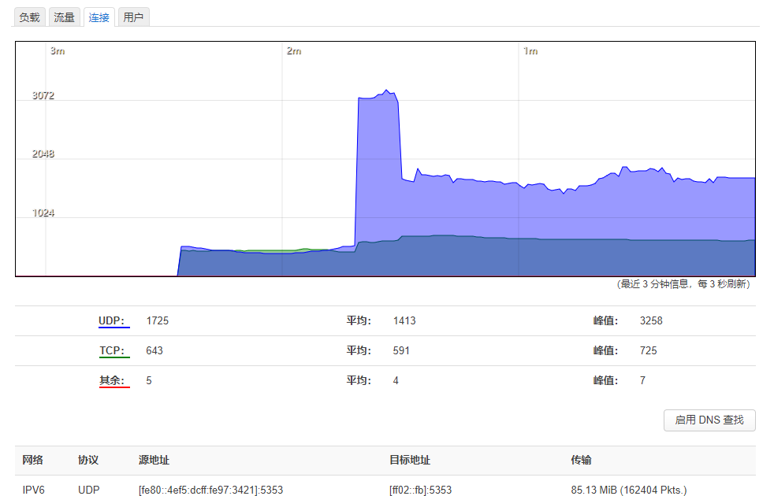
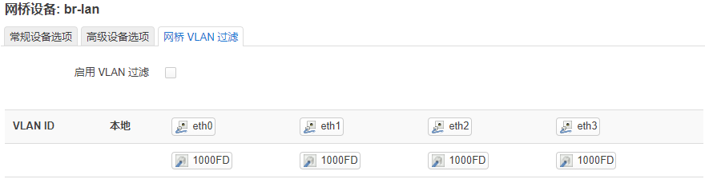
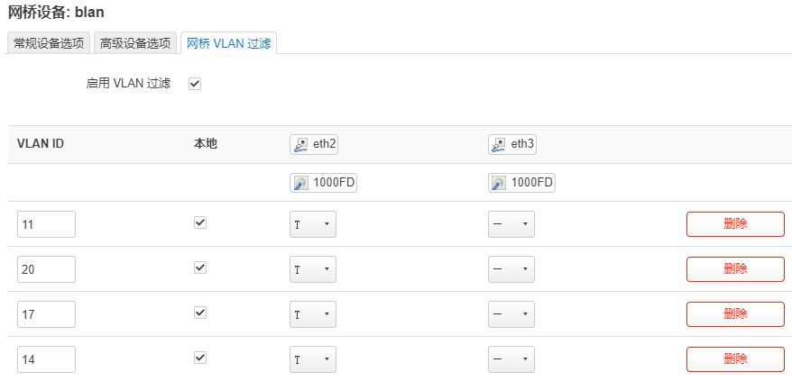
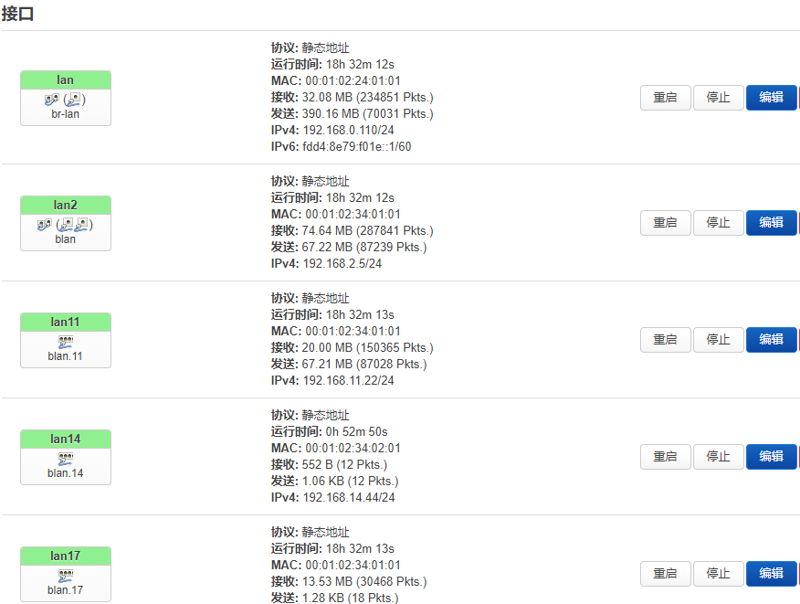
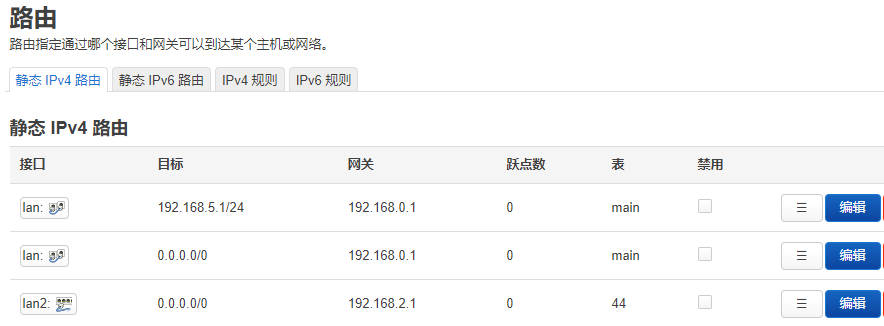

软路由
软路由wrt接管大部分无线接入直接通往防火墙

接口
设备管理二层，接口管理三层 ，三层重点在于防火墙，二层重点在与vlan。wan口不具备任何路由功能（防火墙规则为丢弃）
uci查看配置
uci show network
物理设备规划
虚拟化桥接实际是无效（需要kvm中重复分配），至少双网口4网口配置
pcie名:网口号:虚拟编号
24: 01 : 01-99
24: 02 : 01-99
34: 01 : 01-99
34: 02 : 01-99
[
00:01:02:24:01:01, 00:01-02:24:02:01
00:01:02:34:02:01 , 00:01:02:34:02:01
]
网段:IP百万:IP十位
mac[00:01:02:11:00:99]
eth使用
通过设置修改启用eth网口
虚拟接口规划
所以接口都是虚拟化的要对应各种设备
配置设备后一般都需要指定防护墙区域，方便管理通信(无法连到端口,就是被防火墙挡住了)
路由表
路由表 是一个数字从0-65535， 表+规则完成不同情况走不同的路由
状体->路由--》IPv4 邻居：可以看到arp表
静态 IPv4 路由
| 接口 | 目标 | 网关 | 跃点数 | 表 |
|---|---|---|---|---|
| lan2 | 0.0.0.0/0 | 192.168.2.1 | 0 | 44 |
ipv4规则
| 优先级 | 传入接口 | 源地址 | 传出接口 | 目标地址 | 表 |
|---|---|---|---|---|---|
| 自动 | br-lan | 192.168.99.0/24 | 未指定 | 任意 | 44 |
| 自动 | 未指定 | 192.168.99.199/32 | 未指定 | 任意 | 44 |
注意：当源地址为网段需要指定传入接口
验证路由
tracert -d 112.16.172.14
结果
走电信路线
tracert -d 112.16.172.14
通过最多 30 个跃点跟踪到 112.16.172.14 的路由
1 1 ms 1 ms 1 ms 192.168.20.12
2 3 ms 1 ms 1 ms 192.168.2.1
3 4 ms 3 ms 3 ms 192.168.1.1
4 5 ms 4 ms 4 ms 125.115.232.1
5 44 ms 16 ms 9 ms 115.233.65.145
走移动路线
tracert -d 112.16.172.14
通过最多 30 个跃点跟踪到 112.16.172.14 的路由
1 3 ms 3 ms 3 ms 192.168.11.1
2 <1 毫秒 <1 毫秒 <1 毫秒 112.16.172.14
交换机设置
access/trunk/Hybrid
Hybrid 最灵活
access 最稳定
接口-》设备-》配置

vlan和ip对应
vlan20配置192.168.11.0/24 无法通行 (前提：通一个vlan后对应ip)
启用vlan
设备-》配置-》网桥vlan过滤：启用
vlan id 11 创建了blan.11接口一个，保存但是不应用。
VLAN类型
(已打标签)T 类型 trunk //T类型+主vlan 就能通
(未打标签)U类型 Hybrid //

主vlan
端口的默认vlan 一般不使用，发送的数据默认打上这个vlanid
修改mac地址 （kvm貌似无法实现）
blan.11 的mac地址可以自己定义
使用vlan
接口-》添加新接口 -》软件VLAN: blan.11

blan.11
交换机端口 配置
interface Ethernet0/0/3
port link-type trunk
port trunk allow-pass vlan 2 to 111
基于vlan的路由
规则

路由表

路由协议
opkg install quagga-ospfd quagga-vtysh quagga-zebra